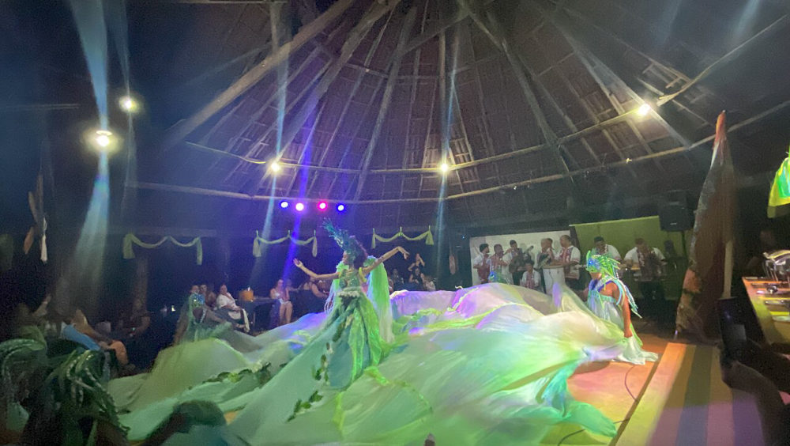
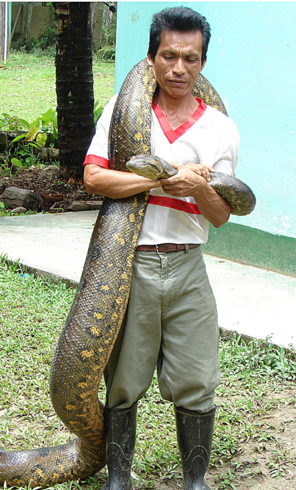
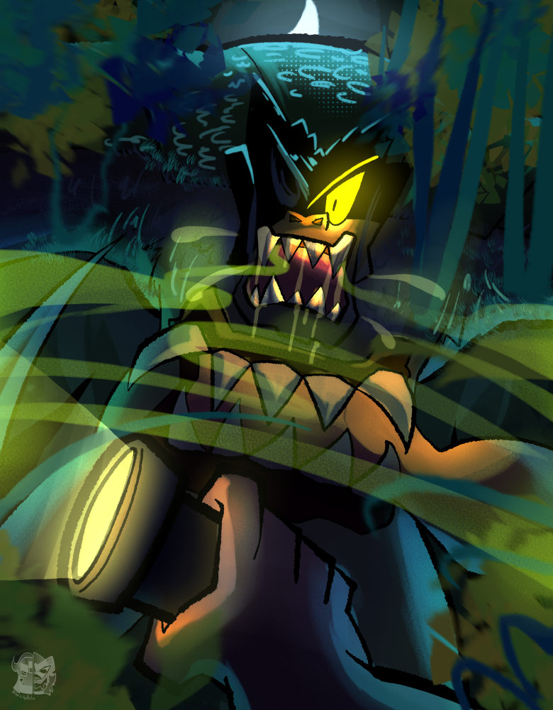
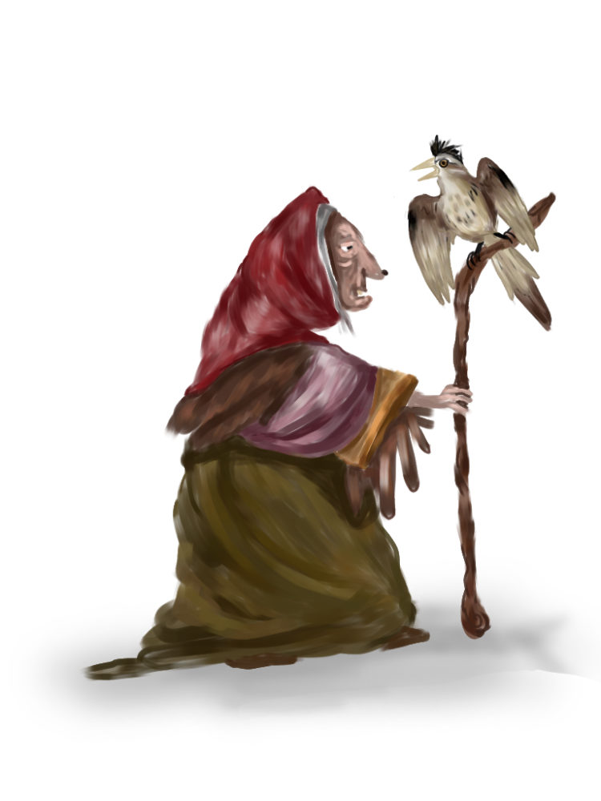
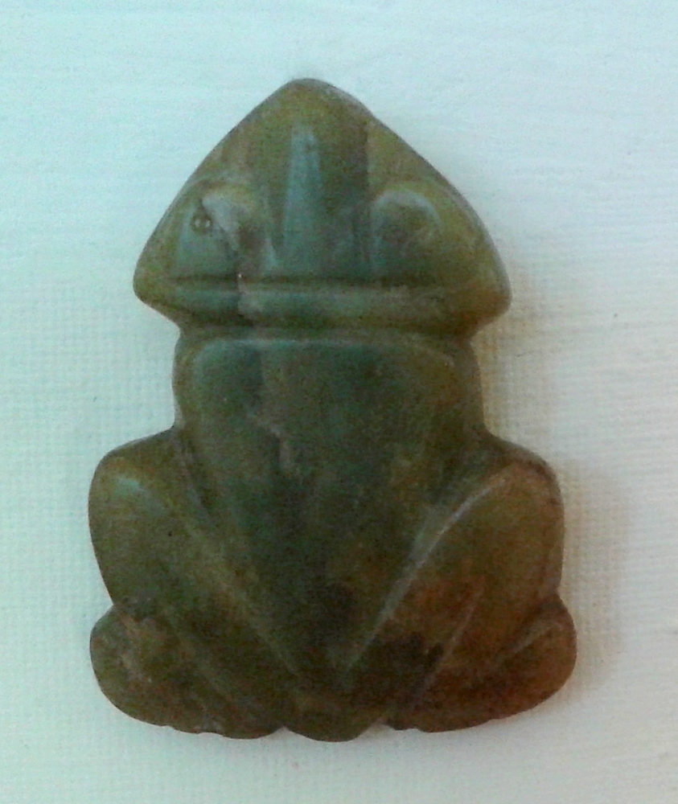
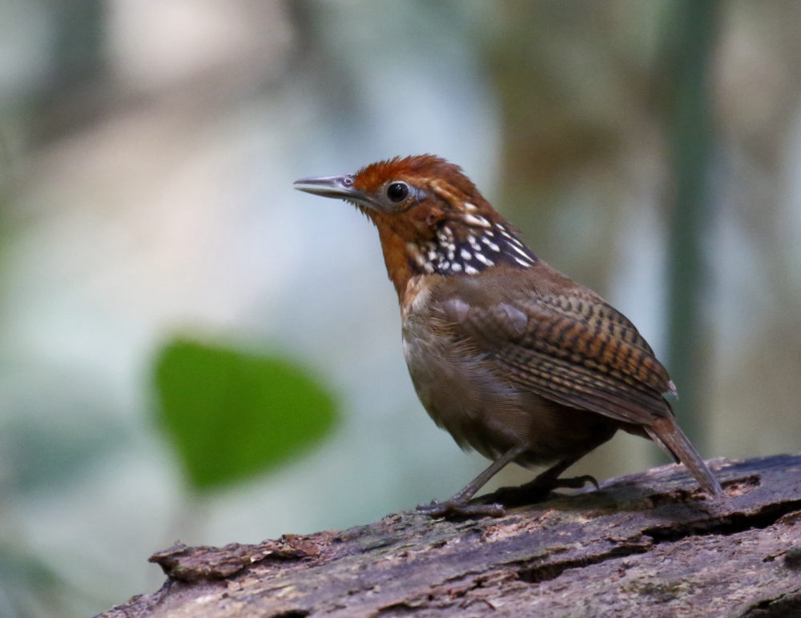

The Amazon isn't only what you can see — the black water, the towering trees, the pink dolphins. It's also everything the river and the forest are said to hide. For as long as anyone can remember, the people of Amazonas have explained the unexplainable through stories, passed down on porches and in canoes, half-warning and half-wonder. Here are some of the most beloved legends of the Amazon — a taste for now, with the full story of each one coming to the blog over the next few days.
The Pink River Dolphin (O Boto)
On festival nights, they say, the pink river dolphin slips out of the water and rises up as a tall, charming man dressed all in white, a hat pulled low to hide the breathing hole on his head. He dances better than anyone, sweet-talks the prettiest woman at the party, and vanishes before dawn back into the river. For generations, an unexplained pregnancy in a riverside town was quietly blamed on the boto. Here on the Rio Negro it's more than a story — the pink dolphins really do swim right up to the boats.
Iara, the Mother of the Water
Iara is the queen of the rivers: half woman, half fish, with green eyes and long dark hair, sitting on a rock at dusk and singing a song no man can resist. Fishermen who follow her voice are pulled down into the deep and never come back. Some say she drowns them; others say she keeps them, enchanted, in a palace beneath the water. Either way, the old folks have a rule — when you hear singing on the river at sundown, you do not turn the canoe toward it.

The Vitória-régia, the Giant Water Lily
Naiá was a young indigenous woman who fell in love with Jaci, the moon, believing that anyone the moon kissed would become a star. Night after night she chased his reflection across the rivers and lakes, until one evening she leaned too far, fell in, and drowned. Moved by her devotion, the moon chose not to make her a star in the sky but a star of the waters — the vitória-régia, the giant lily whose plate-sized leaves still float across the calm lakes of the Amazon. The lilies tend to appear as the rivers begin to rise, around the Meeting of the Waters near Manaus — a fair way from the lodge, but a sight you can take in on our Meeting of the Waters outing.
Curupira, Guardian of the Forest
A small boy with flaming red hair and feet turned backwards, the Curupira is the forest's own bodyguard. His reversed footprints send hunters and loggers walking in circles for hours, hopelessly lost, while he protects the animals and punishes anyone who takes more than they need. Hunt for sport or fell a tree for nothing, and the Curupira will make sure you regret it. Deep in the jungle, when a trail suddenly stops making sense, people still smile and blame the Curupira.
The Great Snake (Cobra Grande / Boiúna)
The Boiúna is an enormous black snake that lives in the deepest channels of the rivers, so old and so large that it can swallow a boat whole. On dark nights it rises to the surface, and the two points of light from its eyes look exactly like the lanterns of an approaching boat — until the "boat" vanishes and the water churns. Some say a stretch of riverbank that suddenly caves in was the Cobra Grande turning over below. It's the reason many river people still won't travel certain channels after dark.

Mapinguari, the Beast of the Jungle
Tall, covered in shaggy reddish hair, with a single eye and a mouth in the middle of its belly, the Mapinguari is the terror of the deep forest. They say it walks slowly, gives off a smell strong enough to stop you in your tracks, and roars loud enough to shake the trees. Like the Curupira, it punishes those who harm the forest without reason. Hunters who push too far into the jungle and never come back are sometimes said to have crossed its path.

Matinta Perê
Matinta Perê is a creature of the Amazon night — often an old woman who turns into a bird and flies over the rooftops, letting out a sharp, mournful whistle in the dark. If the whistling keeps you awake, the trick is to call out and promise her tobacco or coffee in the morning, and the noise will stop. Whoever shows up at your door at dawn asking for it is the Matinta herself. In many towns of the interior, people still leave a little tobacco out, just in case.

The Icamiabas and the Muiraquitã
Long before the Europeans arrived, legend tells of the Icamiabas, a nation of women warriors who lived without men deep in the forest and met them only once a year. As a gift, they would dive to the bottom of a sacred lake and bring up a green amulet shaped like a frog — the muiraquitã — said to bring luck and protection. When a Spanish expedition claimed it was attacked by these fierce women, it named the river after the warrior Amazons of Greek myth. That is how the Amazon — and the state of Amazonas — got its name.

Uirapuru, the Bird of Enchantment
The uirapuru is a small, plain-looking bird with an extraordinary gift: when it sings, every other animal in the forest falls silent to listen. The song lasts only a few minutes and is so rare that hearing it is considered a stroke of pure luck. In the old stories, the bird was once a young man transformed by a forbidden love, still singing for the one he lost. To this day, people carry a dried uirapuru as a charm for love and good fortune.

Hear the Legends Told
Want to go a little deeper while you wait for the full posts? This short video tells five of the Amazon's water legends — Iara and the Boto among them — the way they're passed down here in Amazonas:
"Amazonian water legends" — No Amazonas é Assim (YouTube).
Where the Stories Still Live
At Vista do Lago, these aren't just stories in a book. They live in the places around you — the dark channels where the Cobra Grande is said to lurk, the forest the Curupira guards, the water where the boto really does come to meet you. Ask your guide after dark and you'll hear them the way they're meant to be told: out loud, by the river, under an Amazon sky. And over the next few days, we'll bring you the full story of each legend, one by one, right here on the blog.